VisionFlow 中的概念及其关系#
检测流程、工具和节点#
VisionFlow引入了许多新的概念，为了说明这些概念的含义及它们之间的关系，让我们从一个最 简单的流程开始：
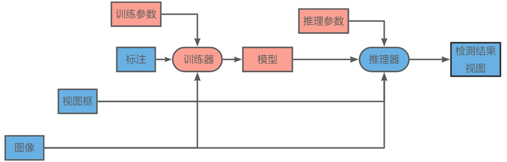这个简单的流程仅包含一个非常简单的AI工具的训练和推理功能，其中，训练器接收训练参数、 训练图片和标注作为输入，经过训练后，输出训练好的模型。然后我们可以使用训练好的模型和 设置的推理参数创建出一个推理器，该推理器接收图像输入，经过算法检测后输出检测结果。
观察这个流程，我们可以发现其中存在四类基本的节点：
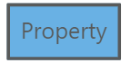 属性(Property)：一个数据节点，一个样本在流程中的不同节点产生的不同输出数据， 都称为该样本的属性；
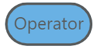 算子(Operator): 一个计算节点，使用由配置器产生的参数进行初始化后， 可以不断的接收该算子所要求的属性输入，并产生新的属性输出；每一个样本经过算子计算后，都可 以参数对应于该样本在该节点上的属性输出；
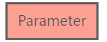 参数(Parameter): 一个数据节点，管理一组用于初始化其他计算节点的数据； 对于一个计算流程来说，每一个参数节点仅存在唯一的参数组；
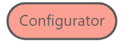 配置器(Configurator): 一个计算节点，可以根据输入的属性集和参数经过 一定的自动或手动操作，产生一个或多个新的参数；
{kind=link}
{kind=link}
{kind=link}
{kind=link}
这四类节点是构成 VisionFlow 流程图的四种核心基本元素，VisionFlow的流程图中的任一节点必是这四类节点之一。 四种基本节点类型的关系如下：
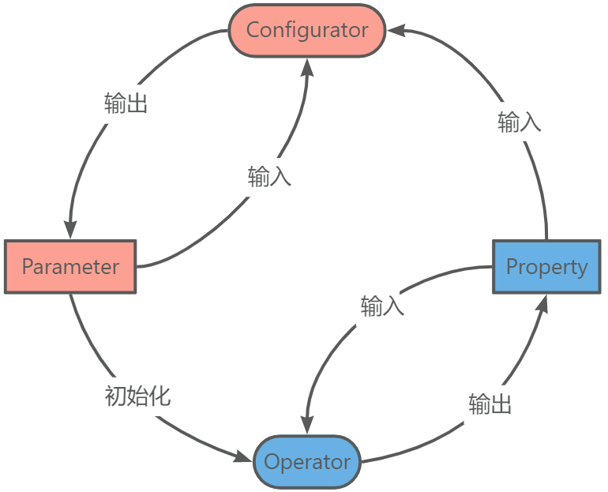{kind=link}
这四类节点的不同实现以及它们之间的相互连接可以组成非常复杂的流程图。为了降低用户的理解成本，我们将一组连 接关系固定的、具有固定功能的节点固定为一个连接图模板，称为一个工具(Tool)，同时为了普通用户不必关心工具内 部复杂连接关系，我们对外屏蔽掉普通用户无需关心的节点，仅暴露若干必要的数据节点作为工具的输入和输出端口。 例如下面所示的一个简单的工具：
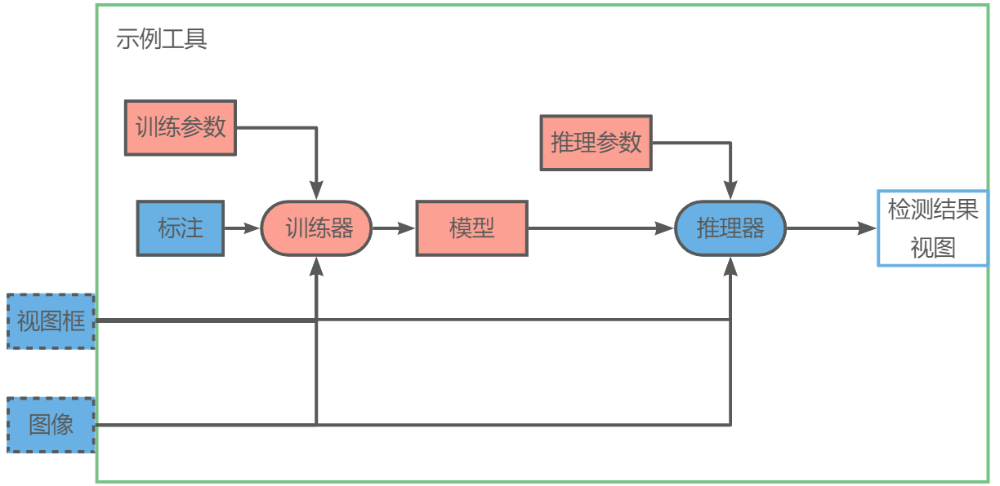在这个示例的工具中，我们将 图像 和 视图窗 设置为工具的输入端口，这样这个工具就可以接收来自其他工 具产生的图像和视图了，也就能够和其他工具配合使用了。同时我们将 检测结果视图 设置为工具的输出数据，这样 其他工具就可以使用该工具的检测结果做进一步的处理了。例如，我们可以构建下面的连接关系：
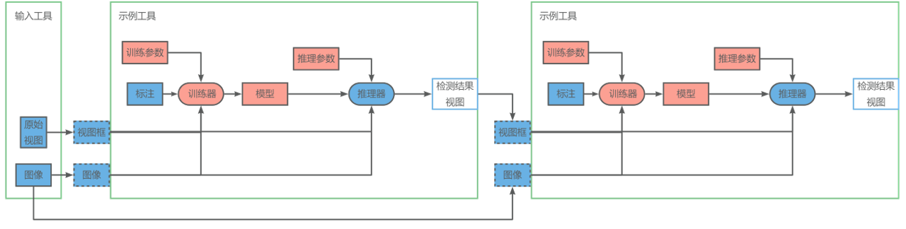在这个示例中，我们使用一个输入工具提供图像和原始视图框，将图像和原始视图框的结果经过我们的示例工具检测得 到检测结果视图框以后，再使用一次示例工具对检测结果的试图区域做进一步检测。当然，这个示例中的工具实际并不 存在。关于VisionFlow所提供的工具，可以在 工具清单及详细流程图 找到。
VisionFlow 中的数据相关的概念#
继续以我们在上面提到的最简单的流程为例，一个图像经过这个流程，则会在对应的节点产生相对应的属性，而在实际环境 中，我们会有很多个图像，每个图像都会经过这个流程，在每一个属性节点产生对应的数据，最终构成一个二维的表格：
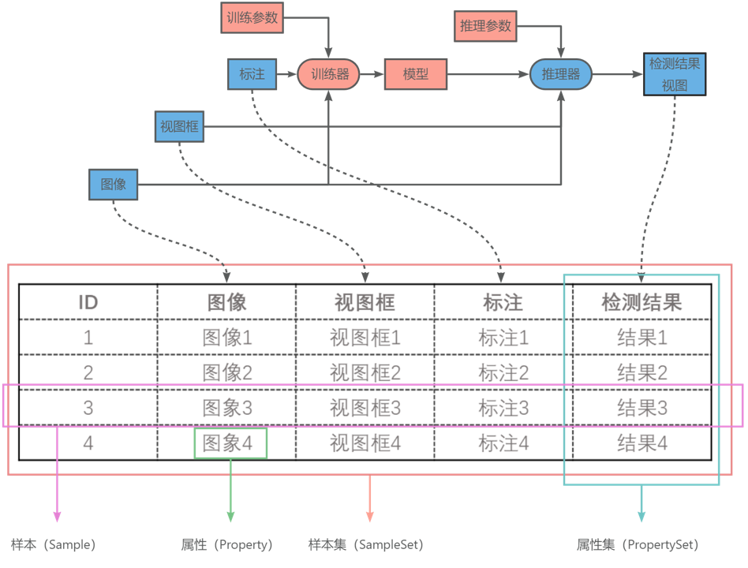在这个表格中，每一个图像个经过这个流程中的每一个节点产生一条 属性(Property) （即表格中的一个格子中 的数据），一个图像经过该流程的所有节点的数据的集合称为一个 样本(Sample) （即表格中的一行），所有的图像 在流程图中统一节点的属性的集合称为一个 属性集(PropertySet) （即表格中的一列）。所有样本的集合构成一个 样本集(SampleSet) （即整个表格）。
对于该流程途中的参数节点，每一个节点都都有一个对应的参数结构，我们需要为每一个参数节点存储对应的参数数据。 此外，一些计算节点可能存在内部状态，这些内部状态也需要被存储下来。最终，对于不同的节点，我们需要存储的数据 如下：
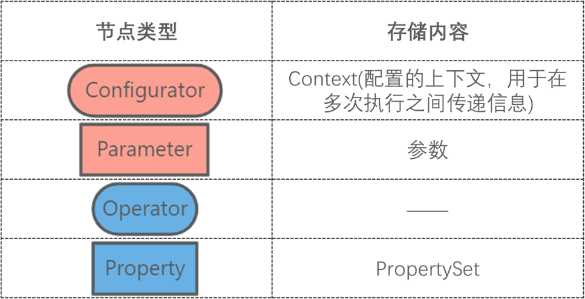{kind=link}
VisionFlow 中的工程#
在了解了VisionFlow中的检测流程图和样本集的概念后，我们就可以比较容易理解VisionFlow中的工程的作用了。为了方便 管理一个检测流程以及与这个检测流程相关的样本集、参数以及计算节点的上下文等所有数据，我们把这些数据都放到一个 工程中，并在检测流程发生变化时同步自动维护相对应的数据。VisionFlow 工程由以下几部分构成：
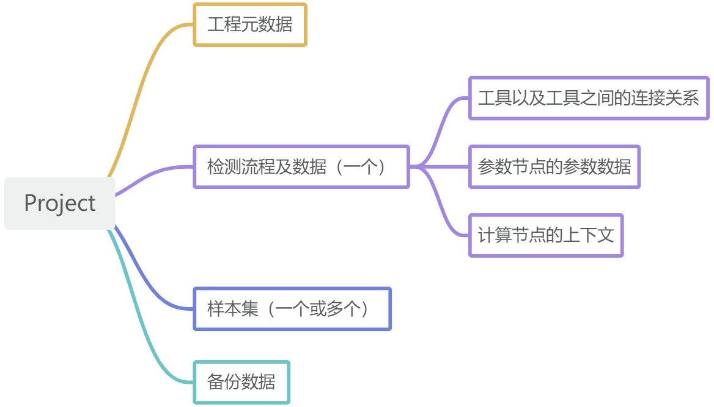{kind=link}
同时，为了让用户能够方便的对工程中各个流程节点的数据和样本数据进行操作，我们开发了对应的接口，这些接口提供了
VisionFlow的核心功能，是VisionFlow中最重要的概念之一。详情请查阅 visionflow::Project 。
VisionFlow 概念词汇表#
- Project#
一个 工程(Project) 是一个用于管理和维护一个检测流程和与这个流程相关的参数、样本集等数据的单元。 Project 通过 “Flow” 维护数据处理流程，并通过 “SampleSet” 维护与该数据处理流程相关联的样本数据。
- Flow#
检测流程(Flow) 是一个数据处理流水线，其核心是一个有向无环计算图。这个计算图由 “节点(Nodes)” 和 “边 (Edges)” 组成。在一个 Flow 中，”节点” 是计算节点（算子(Operator)和配置器(Configurator)）， 而 “边” 是样本属性(Property)或参数(Parameter)。
- Sample#
样本(Sample) 是符合样本属性定义的，一一个样本经过检测流程产生的所有属性数据的集合。除了具有自身的ID之外， 一个样本还包含原始图像数据以及每个算子或工具对原始图像进行处理后的所有输出数据；每个算子的输出数 据存储在样本的一个字典中。
- Property#
属性(Property) 是与样本关联的键值对。键是属性节点的ID，值是属性的数据内容。属性只会由算子生成。
- Operator#
算子(Operator) 是流图中的计算节点，用于处理输入属性并生成输出属性。算子可以使用参数列表进行初始化， 并接受一定数量的属性作为输入，这些属性提供了指定的接口，并且生成固定类型的一定数量的属性作为输出。
- Parameter#
参数(Parameter) 是一组用于控制计算节点的行为的值。参数由配置器(Configurator)生成，并用于初始化算子 或其他配置器。
- Configurator#
配置器(Configurator) 是一个用于为其他计算节点生成参数的类。配置器接受属性集和参数的列表作为输入， 并生成固定类型的一定数量的参数作为输出。
- SampleSet#
样本集(SampleSet) 是一组样本的集合。样本集也可以看作是一个检测流程中所有属性节点对应的属性集的集合。
- PropertySet#
属性集(PropertySet) 是所有样本在检测流程中的某一特定节点的所有属性数据的集合，检测流程中每一个 属性节点都对应着样本集中的一个属性集。
- Workspace#
工作区(Workspace) 是一个包含一组工程的目录。